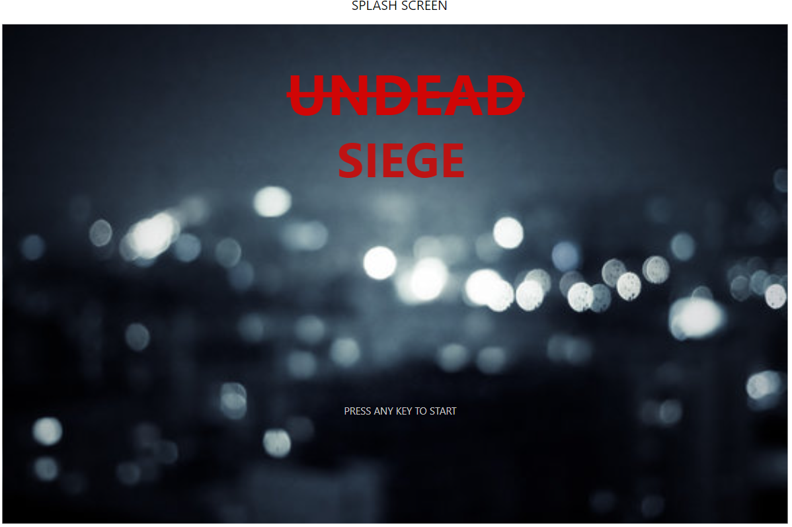
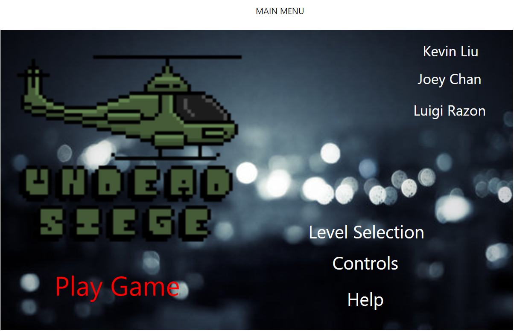
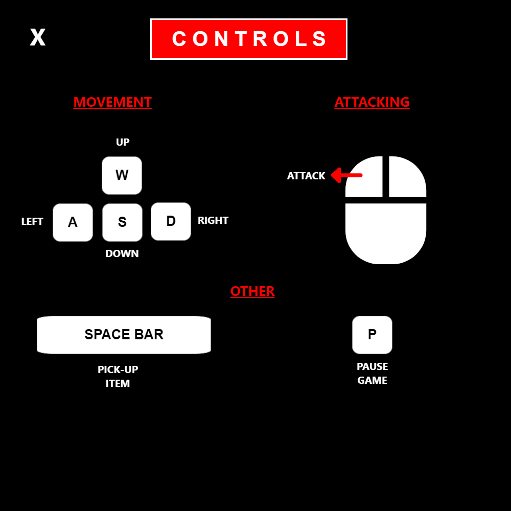
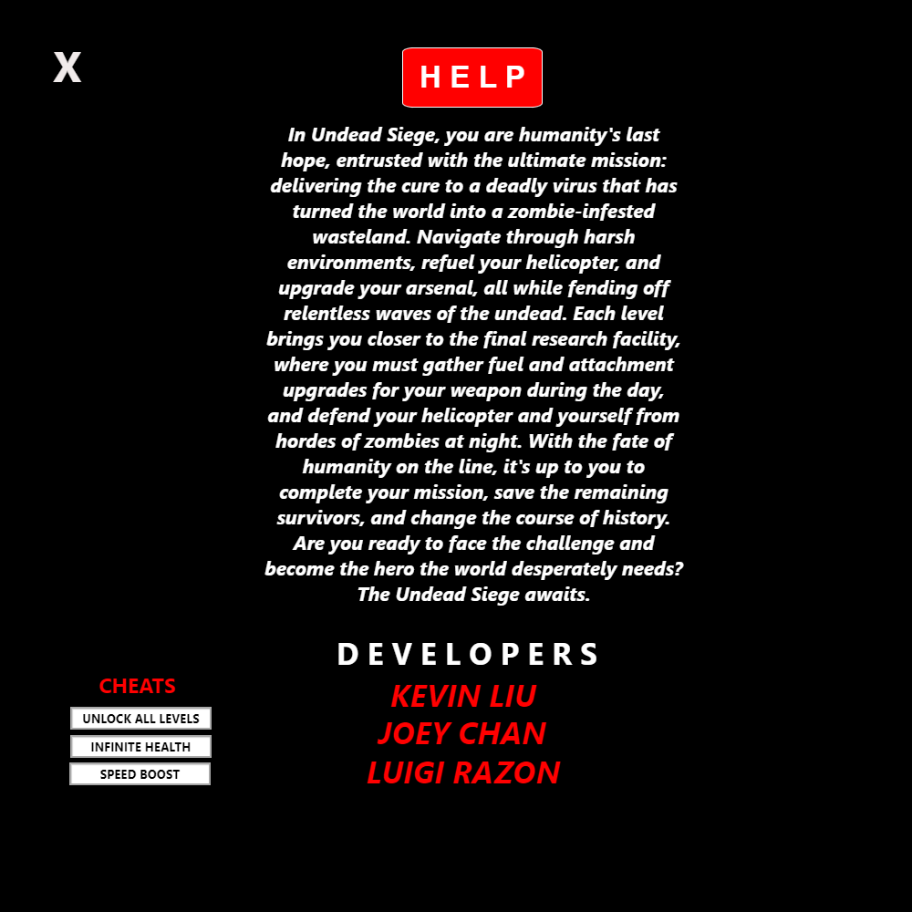
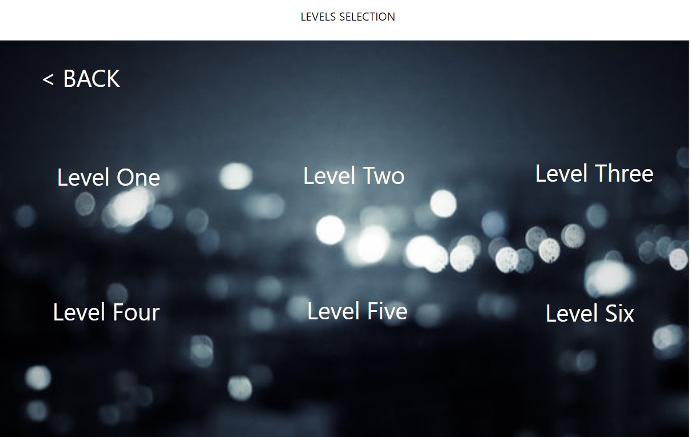
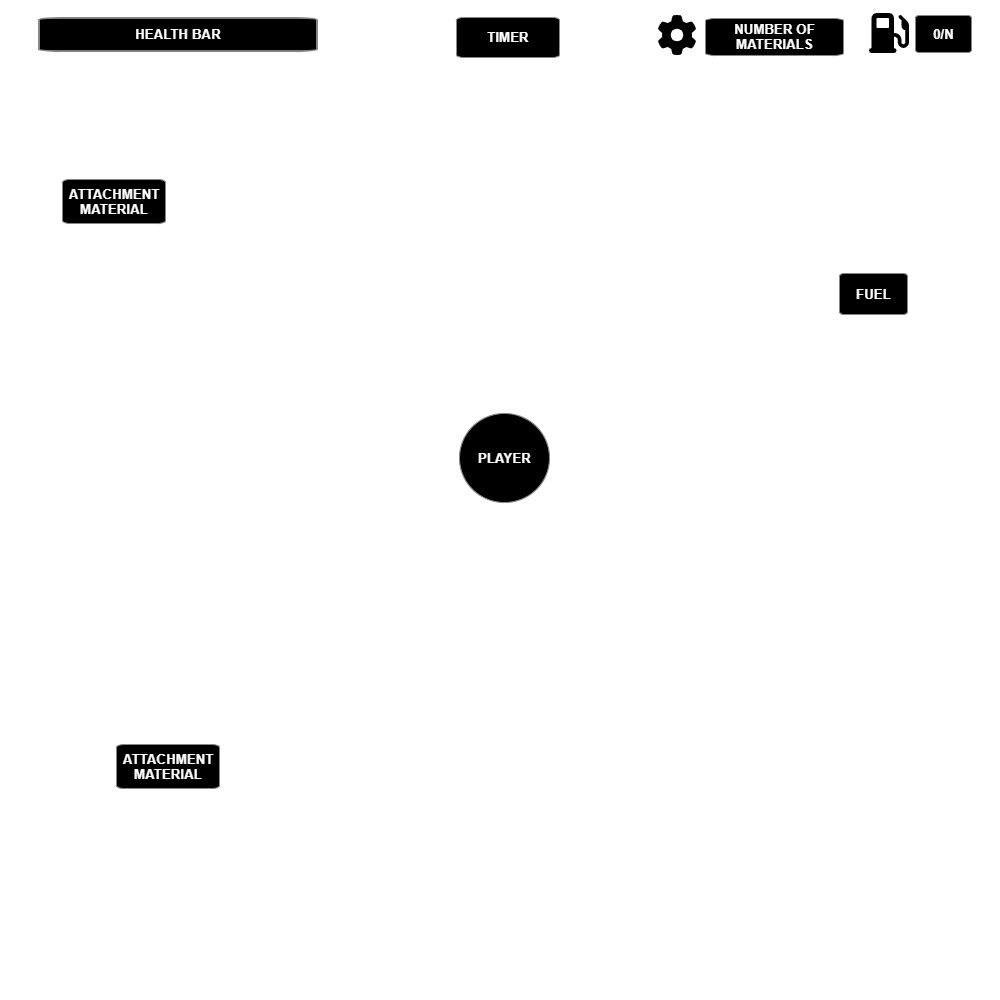
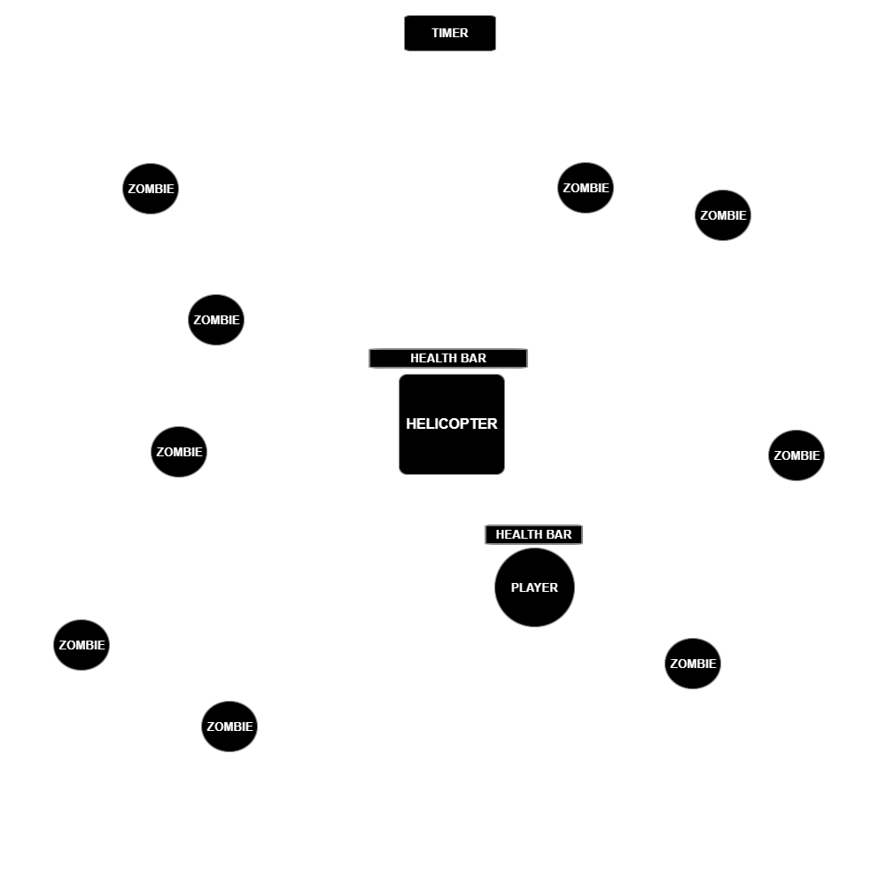

Game Design Document
Benchmark 1
Introduction
This document describes a game called Undead Siege, which is designed to be a simple, top-down shooter, constructed and documented to help others learn to make similar games. The game will employ sprite-based animation, tile-based maps, collision detection, basic AI, top-down movement, and efficient memory management, as well as other basic techniques used in top-down games.
Technology
Undead Siege will be developed for the Windows platform using the Wolfie2D game engine, developed by Richard McKenna for rapid prototyping of 2D games. The underlying rendering technology will be DirectX. Audacity, Chiptone and Petaporon will be used for the creation of music and sound effects, and Adobe Photoshop and Piskell will be used for the creation of the game's artwork.
Backstory
In Undead Siege, you are humanity's last hope, entrusted with the ultimate mission: delivering the cure to a deadly virus that has turned the world into a zombie-infested wasteland. Navigate through the harsh environments, refuel your helicopter, and upgrade your arsenal, all while fending off relentless waves of the undead. Each level brings you closer to the final research facility, where you must gather fuel and attachment upgrades for your weapon during the day, and defend your helicopter and yourself from hordes of zombies at night. With the fate of humanity on the line, it's up to you to complete your mission, save the remaining survivors, and change the course of history.
Are you ready to face the challenge and become the hero the world desperately needs? The Undead Siege awaits.
Objective
Your objective in Undead Siege is to deliver the cure to a deadly virus that has turned the world into a zombie-infested wasteland. As the last hope for humanity, you must navigate through harsh environments, gather fuel and attachment upgrades for your weapons, and fend off relentless waves of the undead.
Each level will bring you closer to the final research facility, where you must gather the necessary resources and defend your helicopter and yourself from hordes of zombies at night. However, time is not on your side. The zombies are constantly increasing in difficulty and count as the night progresses, and if they breach your defenses, it could mean the end of humanity.
Your mission is to survive each night and advance to the next level, all while collecting resources and upgrading your arsenal. You must do everything in your power to keep yourself and the remaining survivors safe from the zombie onslaught.
The fate of humanity rests on your shoulders. Are you ready to face the challenge and become the hero that the world desperately needs?
Gameplay
Undead Siege is a challenging top-down shooter game where you must navigate through the zombie-infested wasteland, fending off relentless waves of undead and collecting resources to stay alive.
The game features a day and night cycle, with each night bringing more difficult and numerous waves of zombies. During the day, you will need to gather fuel for your helicopter and attachment upgrades for your weapons while defending yourself from smaller hordes of zombies.
At night, you must defend your helicopter and yourself from the onslaught of the undead. You can use the resources you gathered during the day to upgrade your arsenal, rebuild barriers, and fortify your defenses against the zombie hordes. If the zombies breach your defenses, it's game over.
You can move your character up, down, left, and right using the W, A, S, and D keys. The space bar is used to interact with the environment, such as refueling your helicopter or rebuilding barriers. To attack, you will use the left mouse button. The game features pause functionality, which can be accessed by pressing the P key. When paused, a pop-up window will appear, allowing you to continue the game when ready.
Controls
This game will be played using a keyboard, and the graphical user interface will be navigated using a mouse. Once started, use the following:
- [A] - Move Left
- [D] - Move Right
- [W] - Move Up
- [S] - Move Down
- [Space Bar] - Interact with Environment
- [Left Click] - Attack
- [P] - This pauses the game and presents a pop-up window to the player, asking them to continue when they are ready. If a game is not in progress, [Esc] does nothing.
Graphical User Interface
Here are the wireframes for the game.
Splash Screen
A simple screen will be presented, that just contains the game’s logo and one sentence of cool descriptive text. It will then fade out and reveal the Main Menu after a few seconds. Users will also be able to press [Esc] to skip this sequence and go straight to the main menu.
The splash screen will contain a graphic that intrigues the player in the real game. It may also contain the game logo .
Main Menu Screen
The main menu will contain buttons to move to the Controls, Help, and Level Selection Screens. It will also have a button to allow the user to start a new game. Upon starting a new game, the screen will fade out and fade in to Level 1.
Controls Screen
This screen will display the controls of the game, in a similar manner to the controls setup listed above.
Help Screen
This screen will list the developers of the game, as well as a link to contact us if the player has any questions or concerns.
The user can scroll through the help screen
Level Selection Screen
This screen will show the player which levels are currently unlocked, which they can then click on to play directly from the main menu. It will also show levels the user has not accessed yet, but these will not be clickable. Upon clicking an accessible level, the screen will fade out and fade in to the respective level.
In-Game GUI
These are the 3 In-Game GUI screens (Morning Gameplay Screen, Night Gameplay Screen, and Pause Screen).
Morning Gameplay Screen
Night Gameplay Screen
Pause Screen

Artwork
The artwork in Undead Siege will be done in pixel art, with a heavy emphasis on the post-apocalyptic theme of the game. The game will feature dark, muted colors to reflect the bleakness of the world and the danger that the player faces. The environments will be highly detailed, with a focus on creating a sense of dread and unease as the player navigates through the zombie-infested wasteland.
Assets will need to be created for the zombies, the player character, the environment, and various other obstacles and objects that the player will encounter throughout the game. Overall, the pixel art in Undead Siege will be highly immersive and will help to create a sense of tension and excitement as the player fights for survival in a world overrun by the undead.
Sound Effects
Sound effects will be created for:
- Gunfire: When the player fires their weapon, there will be a corresponding sound effect that reflects the type of weapon they're using.
- Zombie sounds: The zombies will make different sounds depending on their type and behavior, such as snarls, groans, and screams.
- Movement and interactions: There will be sound effects for the player's movements and interactions with terrain objects, such as footsteps, creaking doors, and the sound of rubble being moved.
- Interactables: Sound effects will also be created for interactables such as levers, buttons, and doors opening and closing.
- Death: When the player dies, there will be a corresponding sound effect to signify the end of the game.
Music
Original music will be created for this game.